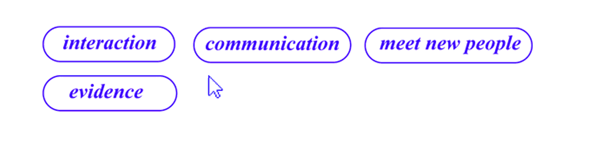

About/
relational design is the creation by designers of
platforms or systems that empower users
to generate their work,
effectively
becoming designers.
Features/

Values/
autonomous, independent, isolated,
and closed, relational
design is synonymous with interdependence,
connectedness, and openness.
It evokes today’s networkculture,
both literally and metaphorically,
and the web of associations,
uses, and contexts determining design today.
Andrew Blauvelt "The Rise of Relational: Five themes in Relacional Design :2012"
xoxo <3
João Pereira